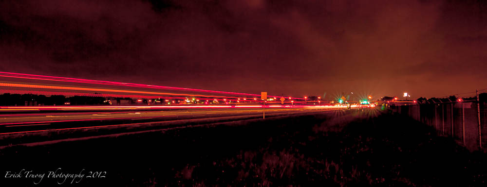

Welcome To Erick Truong Photography. I would like to welcome you to my page. Photography has been a hobby of mine for the last 5 years and is
one of the ways I release my creative side. I like to shoot all types of photography such as wedding, long exposure and nature photography. If I had to choose one I would go with Long exposure.
Long exposure allows me to create some really interesting photos. If you are interested in the equipment I used to shoot some of these photos please see the list below.
Nikon D700
Nikkor AF-S 14-24mm f/2.8g ED
Nikkor 50mm f/1.2
Photography Shoots
Wedding Photography
As a photographer, I like to shoot many mediums. Wedding Photography is one of the more difficult mediums to shoot.
The reason I find this the most difficult is that all wedding parties are stressed out and makes for a difficult dynamic.
Another difficult this is the fact that each and every moment only happens once and If I miss the "SHOT" then I will have failed.
This photo was from a wedding I took at the Glen Eagles Country Club in Weeki Wachee, Florida. I love Black and white photos because they give a different sense of depth to a photo.
This photo was from the same wedding. This little girl kept following me around and wanted to be photographed. I thought it was cute so I took a few photos and I thought this was a cute one.
This last photo is of the brides dress from the same wedding. I arrived early at the venue to get a few shots of the venue and this wedding dress. I think the black and white
does the dress justice. I used the window light to create highlight and shadowing to give the photo depth.
Long Exposure Photography
Long Exposure is all about patience! Long exposure photography is about taking your camera and leaving the shutter open over a long period of time.
During the time the shutter is open the camera catches all the light over the extended period of time and blends any movements together to create a
photo that captures movement in still form. I love this type of photography.

This photo was taken down by the Tampa airport on a busy Saturday night.
In this picture I caught cars and buses driving by to create the red streaks you see in the photo.
The spacing between the red lines indicates the height of the vehicles that drove by during the exposure.
This colorful photo was taken on the Tampa Riverwalk not too far from the University of Tampa. The shutter on the camera of this photo was left open for 3 minutes and during
that time you can see the different bright colors from the lights under the bridge. If you look closely you will see a red streak by
the green bridge supports from a helicopter that took off from Tampa General Hospital. I wasn't expecting that but it was a nice bonus.
Nature / Cityscapes
Nature and Cityscapes photography is fun for me since I get to explore the terrain and environment to find the best angle for the perfect shot. Being in nature and the city
allows me to clear my mind and just create.
This first photo I call beautiful doom. This photo was taken at Hudson beach at sunset. As I was taking this photo, a vicious thunderstorm was brewing in the distance. It
started to roll in and I could see lightning in the clouds that looked like sparks similar to what you might see in a spark plug. 20 Minutes after this photo was taken the storm was in
full effect and I sat and the car and waited for the rain to let up since it was too heavy to drive.
This photo has a little bit of everything. This is a picture of the golden gate bridge from a vacation I took to San Francisco in 2013. Every time I look at this photo
it reminds of me chaos referencing all the cars coming across the bridge in addition to the fog rolling in off of the mountainside.